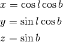

lonlat_to_vector¶
-
spherical_geometry.vector.lonlat_to_vector(lon, lat, degrees=True)[source]¶ Converts a location on the unit sphere from longitude and latitude to an x, y, z vector.
Parameters: lon, lat : scalars or 1-D arrays
degrees : bool, optional
If
True, (default) lon and lat are in decimal degrees, otherwise in radians.Returns: x, y, z : tuple of scalars or 1-D arrays of the same length
Notes
Where longitude is l and latitude is b:
